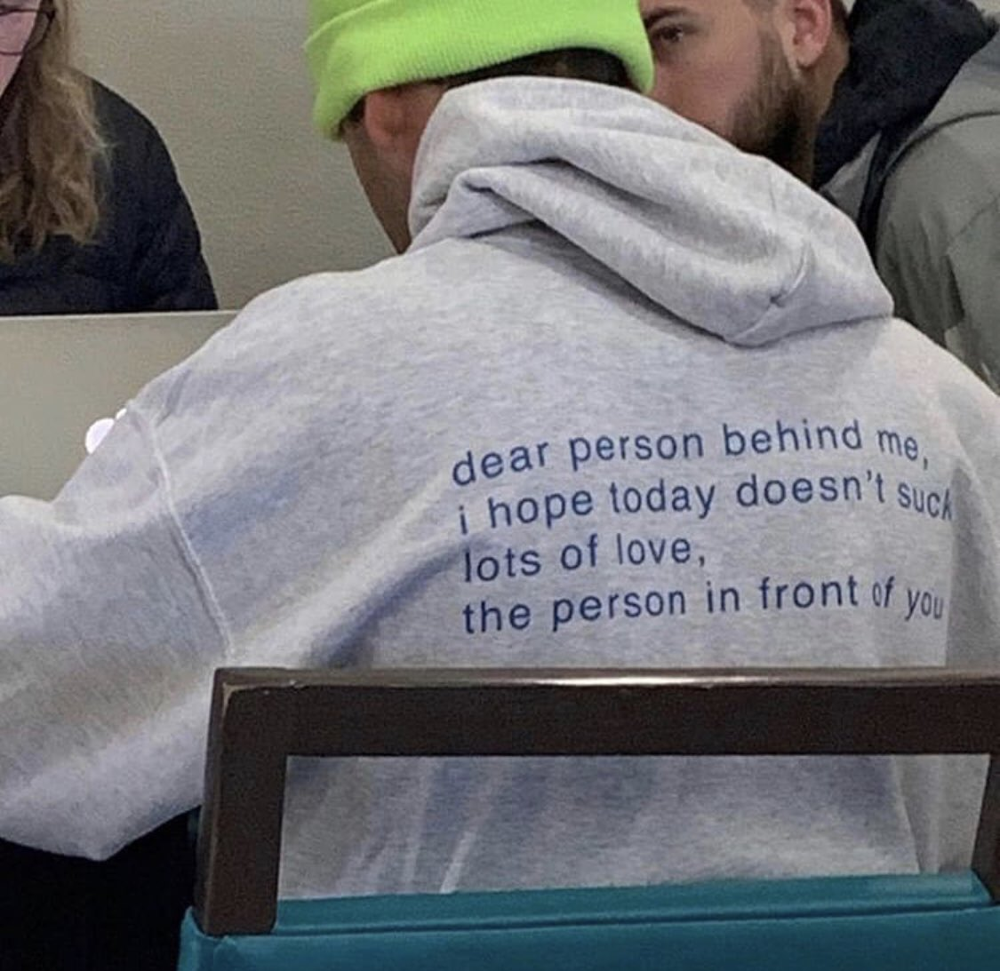

My passion for challenges can be traced back to when i joined and won a science contest in high school despite being the least performing chemistry student in class. I don't particularly consider myself to be competitive per se but taking risks, challenging myself and trying my best to improve myself and finding a new version of myself is my greatest quest in life. People find me to be upbeat, self-motivated team player with excellent communication skills.
I have a bachelor's degree in business management with specialization in finance and banking. For the past five years i've worked in a real estate firm where i started off as a receptionist and progessed to lead accountant and later branch manager.
I decided to venture into tech because, as cliche as it sounds, technology moves the world. And the tech industry is the fastest growing industry with endless opportunitiies. Tech also, allows room to showcase your artistic side and integrate it with your work which was not the case in my previous professional field.
I have a variety of interests some of which include:
Here are some of the projects i've worked on since joining moringa school.
Check out gh-pages
Check out gh-pages
